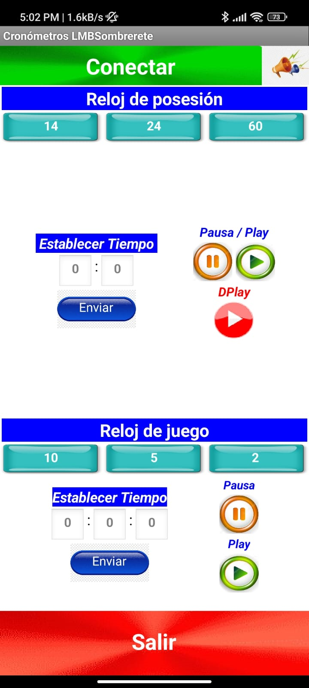
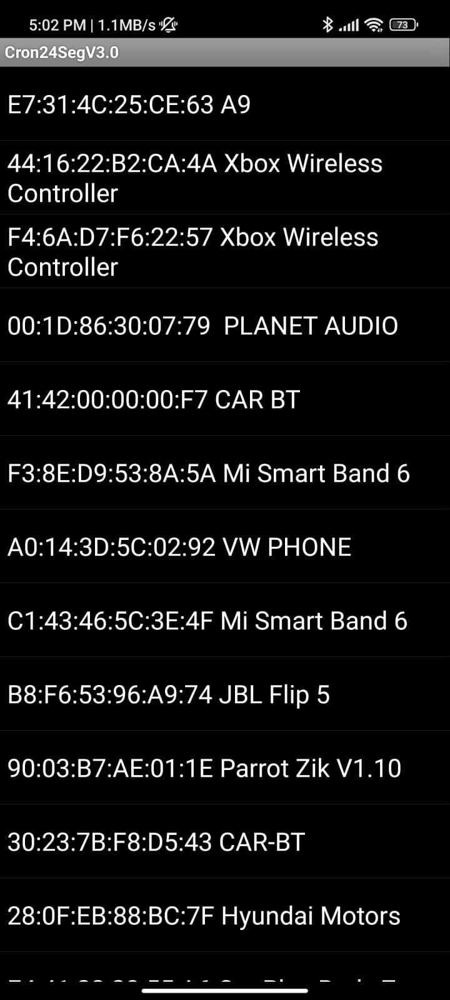

Tablero Electronico
El proyecto consiste en rehabilitar los cronómetros, de posesión y de juego, del sistema electrónico de marcación de basquetbol, que pertenece a la Secretaría Municipal del Deporte de la Presidencia Municipal de Sombrerete, Zac., y pretende resolver inconvenientes que se presentan al desarrollarse los partidos de básquetbol, donde los deportistas deben llevar un control adecuado del tiempo de juego y tiempo de posesión, permitiendo así una mejor experiencia, evitando posibles errores en los partidos y brindando una mejora sensible en la actividad deportiva del municipio.
 